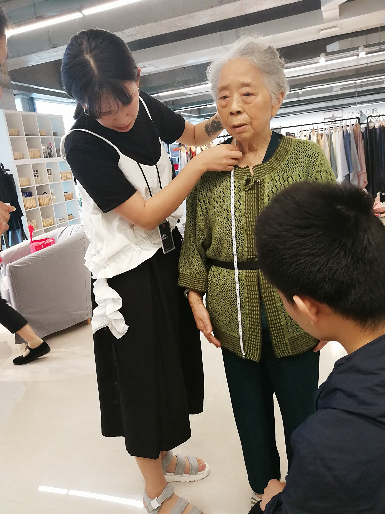
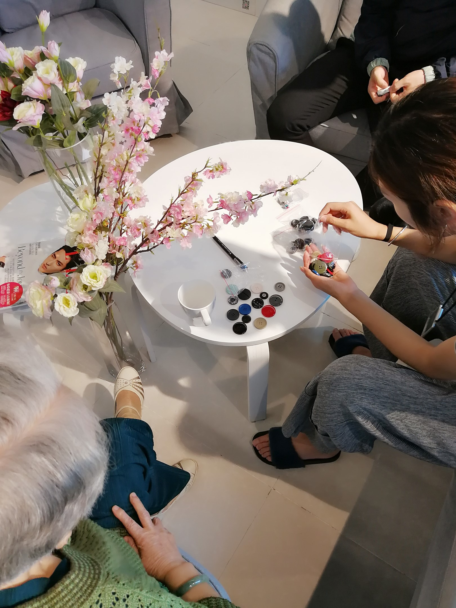
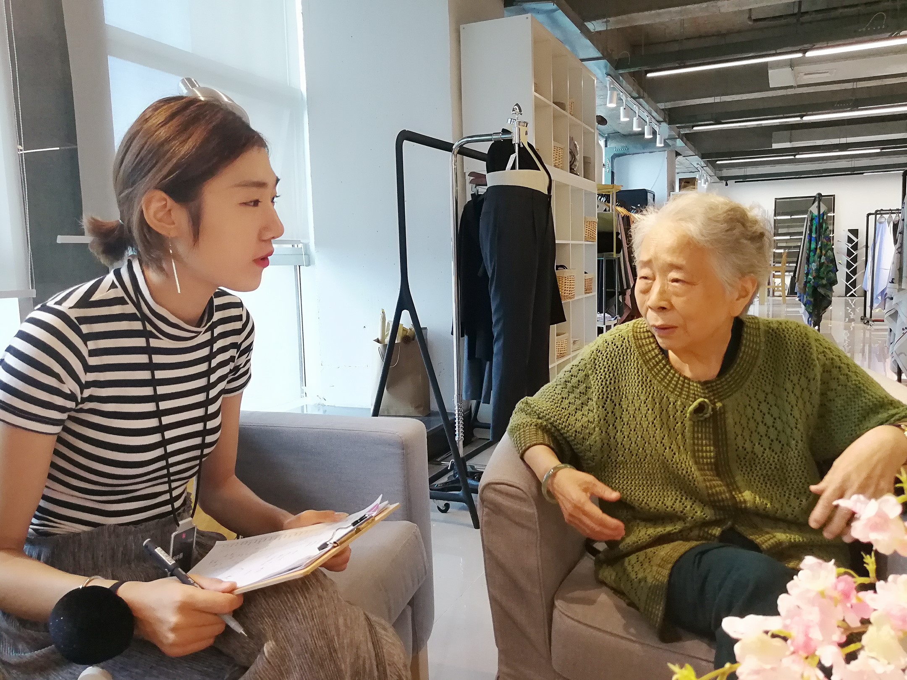
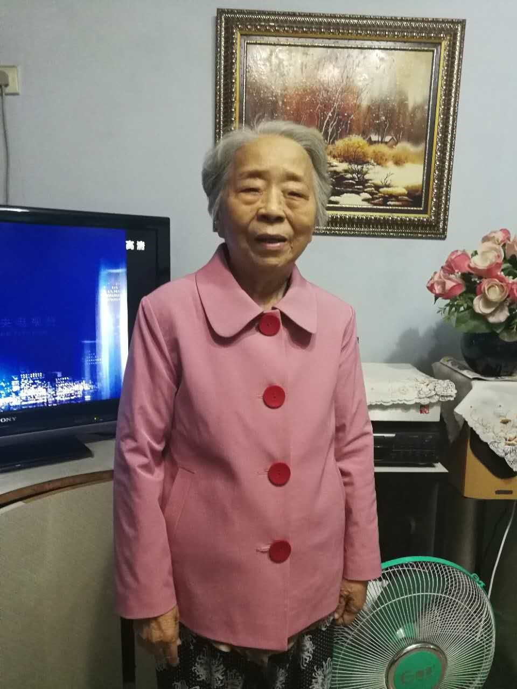

所谓孝敬，就是让您穿好衣
不管是哪个时代，想来应该没有哪个女子不爱红装吧。
在奶奶那个年代，粗布手缝的外套，大多都是藏蓝或者纯黑，偶尔有手巧的女子，在自己的衣角绣上一朵花或者
用难得的彩色布料做一个印花的贴布已是潮流至极了。等到孩子们长大成家，时光也在她身上留下了深刻的印记，本是
一头青丝的窈窕少女已是银发苍苍步履蹒跚的老者。想着奶奶在花样的年纪都没有缤纷过，作为晚辈，总觉得应该为她做点什么。
也许很多人会说，韶华不再，没必要耀眼闪亮。
可是谁说耋耄之年，就要放弃变美的追求呢？
难道要和别人一样只能选择商场里样式普通、色彩黯淡、尺码不符的“老年服饰”么？不！满头银发不是放弃选择美丽的理由。奶奶不是，更多的人都不是。
为奶奶重返青春的易典佳：
TailorX是我在上海的朋友推荐给我的，现在在成都也有了店铺，于是在APP预约成功以后，带上奶奶去店里进行身体数据的测量，
因为是私人定制所以设计师在测量的时候都很仔细，精确的记录了几十项数据，加上奶奶身体不是很硬朗，所以设计师们都是很轻柔的在为奶奶量体。

我为奶奶选择了稍暗的粉色进口面料，含棉80%，摸上去很柔软，秋冬也不会起静电；纽扣选择了样式比较夸张的大片暗红色玳瑁材质；
整体风格参照了伊丽莎白女王的私服，合体的剪裁，简约的款式，出街和私服都能适应。

选完所有面料、辅料、配饰核算完所有的价格，只要不到400元，是让我很惊喜的地方，因为之前我在别处为自己定制过一件小黑裙，
简单的款式我很喜欢，但是那件小黑裙差不多花掉了2000人民币，当我看到这个价格的时候，真的是不敢相信的，全进口的面料、
量体裁衣、完全的私人定制，价格比同等面料的成衣便宜了差不多2/3。

拿到衣服的时候，算了一下时间，只要8天，比起之前定制2个月的周期，整整节约了50多天，这样私人定制的收货速度，简直是“惊为天人”。
收到衣服后迫不及待的让奶奶穿起来，衣长和袖长都刚刚好，还有特别叮嘱了的肩部和胸部也很适合，我很满意，奶奶也很满意。
看着镜子中闪耀漂亮的自己，奶奶脸上的笑容也更加灿烂了，仿佛那一瞬间，她又回到了盛年之时那个摇曳多姿的自己。

平时，给她的陪伴不是很多，很多时候都是她在“唠唠叨叨”的提醒我生活中那些细枝末节的事。在奶奶眼里，我还是那个走路跌跌撞撞摔倒
在地哇哇大哭的小女孩，可是我长大，她已经老了，在有她的日子里，做一些孝敬她的事，让她在生命开始倒数的日子里，穿点更好的。